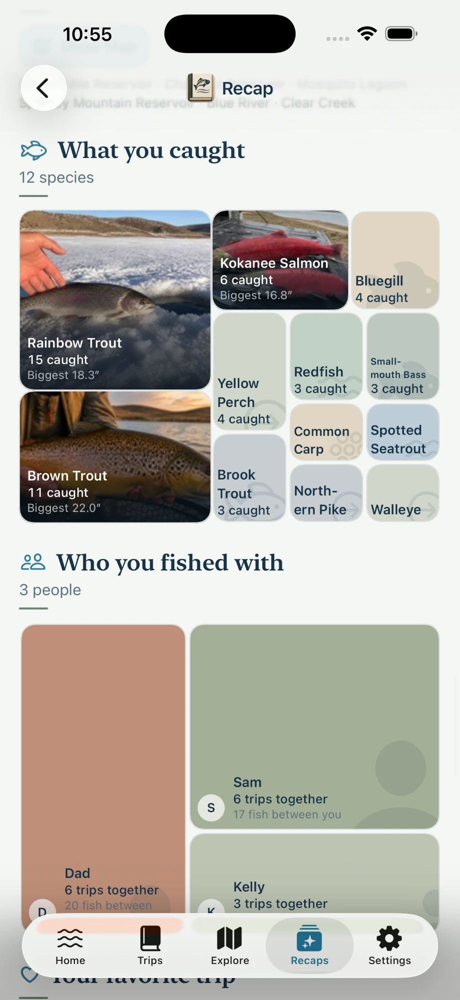

No account required
You can start your journal without signing up for anything. No email, no password, no profile waiting to be filled in before you can write down a trip. Open the app and record the day.
Keep the place, the people, the conditions, the route, the photos, and the notes that make a day on the water worth remembering. Not just the catch. Then watch what all of it becomes after a few years.
You can start your journal without signing up for anything. No email, no password, no profile waiting to be filled in before you can write down a trip. Open the app and record the day.
A lot of good water has no service. Your trips, catches, photos, notes, and routes save on your device, and maps still show. The only thing that needs a connection is looking up the weather, and you can always type that in yourself.
Start with the day itself: the date, the water, the notes, the people, the conditions. Everything else hangs off it. When you look back, you see a trip, not a pile of unrelated entries with the same timestamp.
Pick a water and tap Start Fishing. While you are out, the trip screen keeps the things you reach for close: log a catch, add a photo, write a note, record a route, or save the weather. Finish the trip when you head home.

Keep each fish attached to the day it came from. Species, time, location, photos, and whatever details you care about. A catch means more when you can still see the morning around it.
Length and weight are there if you measured. Mark whether you kept it or let it go, and tap the lure or bait you were using from your recent favorites. Even the species is optional. You can save a catch without it.

The photo shows the fish. Your notes hold the rest: what the water looked like, what you tried first, what you want to do differently next time. Keep both with the trip so they still mean something when you find them in four years.
Save the lakes, rivers, shorelines, coves, and launch points that end up mattering to you, and keep every trip that happened there attached. Over time you can see which water you keep choosing.
A lot of fishing memories are really memories of people. Record who was there, and years from now you can pull up every day you spent with your dad, your daughter, or the friend who always brings the bad coffee.
Note the weather, the water, and whatever else you pay attention to while the trip is still fresh. It helps you remember the day, and after enough trips it starts to show you patterns in your own fishing.
One tap saves the current weather from Apple Weather: temperature, sky, wind, and pressure. Only the water's general location is sent to look it up. Or type the conditions in yourself.
Write down what you threw and what finally got a response. Next season, that note is worth more than anything you could look up.
Save the setups you fish with, like a trout rod or a spinning combo, and attach one to the trip. Note how you fished that day, whether that was fly fishing or something else. It is one more detail that brings the day back.
Optional GPS tracking can keep the path of a trip, whether you are walking a river, wading, paddling, trolling, or working your way down a shoreline. The route becomes part of the memory.
Browse past trips by date, place, species, or the people you fished with. Watch the calendar fill in across a season. Everything you recorded stays where you can find it.
Explore gathers it all in one place: a calendar of every day you were out, your catches, your waters, and a mosaic of what defined your fishing. Jump to any year with a tap.

Your first fish of a new species and your biggest of each are noted for you, quietly, in your calendar and your recap. Not something to chase. Just a way to remember the day it happened.
Once a year, see the whole season at once: the trips, the catches, the places, the people, the photos, and the small statistics that turn out to be more interesting than you expected. Not a ranking. Just the year you actually had.
Each month gets a recap too, and the current year fills in as you go.

Turn a year of trips, photos, catches, places, and notes into a fishing photo book, saved as a PDF. Print it at home or take it to a print shop.
Choose a keepsake or a recap, which outings go in, the photos, and a square or standard page size. Your notes and the names of the people you fished with are yours to include or leave out.

Cast Your Line is free to download, and you can keep up to 10 trips for free. That is enough to see whether it suits the way you fish. When you want more, unlock the full app: pay $19.99 once and keep it for good, or pay $1.99 a month. No ads either way, and you still do not need an account with us.
Purchases go through the App Store, so you can restore them on your other devices. Prices are in US dollars and may vary by country.
The real value is not one entry. It is what you have after dozens, then hundreds, of days are written down. A record of a part of your life that would otherwise be mostly gone.